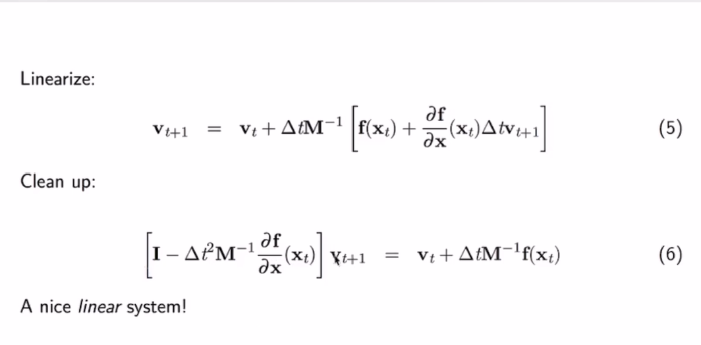
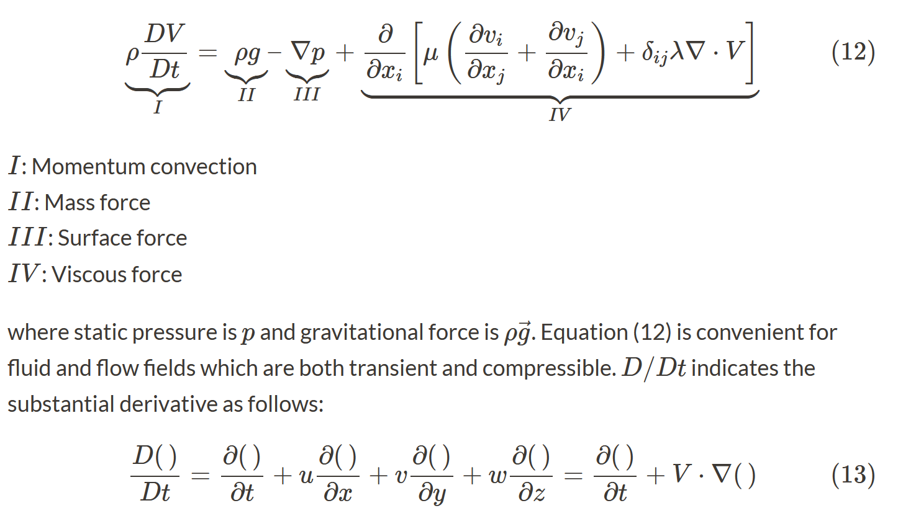
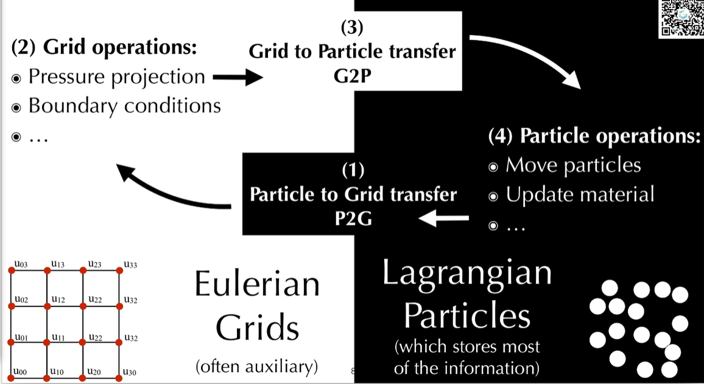
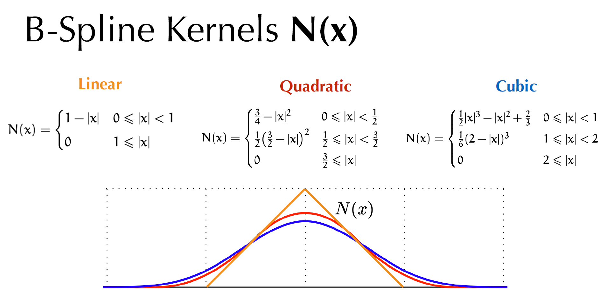
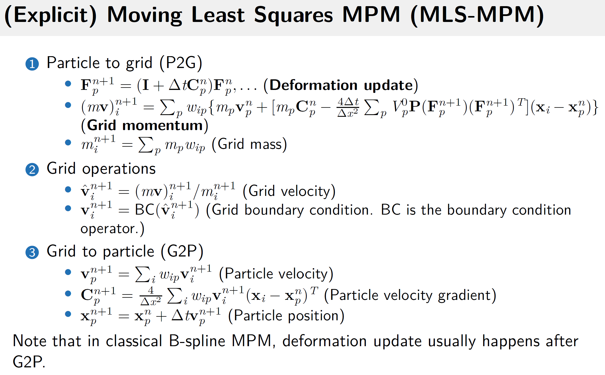

Decouple data structure from computation.
stencil
Spatial sparsity is specially treated in taichi. Different data structures can be used to process this sparsity in the compiler.
Single program multiple data (SPMD)
Data structure: array of structure(AOS) & structure of array(SOA)
Taichi syntax basics
The gene of Taichi is parallel computing.
Data format
Tensor is a multidim array whose elements can be everything even matrices.
import taichi as ti
ti.init()
a = ti.var(dt=ti.f32, shape=(42,63))# a tensor of 42X63 scalars
b = ti.Vector(3, dt=ti.f32, shape=4)# a tensor of 4X3D vectors
c = ti.Matrix(2,2,dt=ti.f32,shape=(3,5))# a tensor of 3X5 2X2 matrices# ti.* defines the type of each element and the first part defines the size of each element
loss = ti.var(dt=ti.f32, shape=())# this is a scalar defined in tensor form
loss[None]=3# use this to assign value to a scalar in a tensor form
Kernel and function
In Taichi, kernel is the computation function.
Kernels must be decorated with @ti.kernel. They can call functions but cannot be call other kernels.
Taichi functions can be called directly by Taichi kernels and other Taichi functions but not python. Only one return is supported up to now. They must be decorated with @ti.func.
Element-wise product *; marix product @.
For loops
For loops in Taichi have 2 forms.
Range-for loops: Similar to Python. Will be parallelized when used at the outermost scope.
Struct-for loops: Iterates over (sparse) tensor elements.
For loops at the outermost scope in Taichi is automatically parallelized.
ti.init(arch=ti.gpu)
n =320
pixels = ti.var(dt=ti.f32, shape=(2*n, n))
@ti.kernel
defpaint(t:ti.f32):for i,j in pixels:
pixels[i,j]= i*3+j*4+t
Atomic operations
Atomic operation is designed to deal with parallel computing. An atomic operation will go from start to finish without interruption of other threads.
In Taichi, augmented assignments (x[i]+=1)
Taichi-scope: in @ti.kernel or @ti.func. Compiled in Taichi and run in parallel.
Python-scope: Compiled in Python.
Phases of a Taichi program
Initialization: ti.init(…)
Tensor allocation: ti.var, ti.Vector, ti.Matrix
Computation (lauch kernels…)
Optional: restart the Taichi system (clear memory, destroy variables and kernels…) ti.reset()
❕👀 After the first ti.kernel, no more tensor allocation is allowed.
# fractal.pyimport taichi as ti
ti.init(arch=ti.cpu)
n=320
pixels = ti.var(dt=ti.f32, shape=(2*n, n))
@ti.func
defcomplex_sqr(z):return ti.Vector([z[0]**2- z[1]**2, z[1]* z[0]*2])
@ti.kernel
defpaint(t: ti.f32):for i,j in pixels:
c = ti.Vector([-0.8, ti.cos(t)*0.2])
z = ti.Vector([i/n -1, j/n -0.5])*2
iterations =0while z.norm()<20and iterations <50:
z = complex_sqr(z)+ c
iterations +=1
pixels[i, j]=1- iterations *0.02
gui = ti.GUI("Julia Set", res=(n *2, n))for i inrange(1000000):
paint(i *0.03)
gui.set_image(pixels)
gui.show()
Debug mode
debug = True (cpu only)
ti.init(debug=True, arch=ti.cpu)
a = ti.var(dt=ti.f32, shape=(10))
b = ti.var(dt=ti.f32, shape=(10))
@ti.kernel
defshift():for i inrange(10):
a[i]= b[i+1]# bound checker is only activated in debug mode to save time in normal mode.
shift()
xi−xj: direction vector from particle i to particle j (unit vector). □ means normalization.
Implicit time integration:
with taylor expansion

To solver this linear system, there are many methods like Jacobi iteration/Gauss-Seidel iteration or conjugate gradients(共轭梯度), etc. Unifying explict and implicit: Solve faster
For system with millions of mass points and springs,
Sparse matrices
Conjugate gradients
Preconditioning
Use position-based dynamics(PBD)
Also some faster approches like Fast mass-spring system solver(“Fast simulation of mass-spring systems” in ACM Transactions)
Popular hyperelastic material models (for each element)
Neo-Hookean
ψ(F)=2μ∑i[(FTF)ii−1]−μlog(J)+2λlog2(J)
P(F)=∂F∂ψ(F)=μ(F−F−T)+λlog(J)F−T
(Fixed) Corotated
ψ(F)=μ∑i(σi−1)2+2λ(J−1)2
P(F)=∂F∂ψ=2μ(F−R)+λ(J−1)JF−T
FEM
Linear tetrahedral FEM
The deformation map ϕ is affine and thus deformation gradient F is constant within a single tetrahedral element: xdeformed=Fxrest+b
For every element e, its elastic potential energy U(e)=∫eψ(F(x))x=Veψ(Fe)
For explicit scheme (semi-implicit) vt+1,i=vt,i+Δtmift,i
Convert strong (accurate at every point) to weak form
Integrate by parts
Use divergence theorem to simplify equations and enforce Neumann boundary conditions
Discretization (build stiffness matrix and right-hand side)
Solve the linear system
Discretizing Poisson’s equation
2D Poisson’s equation
∇⋅∇u=0
Dirichlet boundary: displacement(第一类边界条件) u(x)=f(x)
Neumann boundary: some kind of force(第二类边界条件) ∇u(x)⋅n=g(x)
Weak formulation
Arbitrary 2D test function w(x): ∇⋅∇u=0⇔∀w,∬Ωw(∇⋅∇u)dA=0
Getting rid of second-order terms
We want to get rid of ∇⋅∇ in ∇⋅∇u=0.
Integrate by parts: ∇w⋅∇u+w∇⋅∇u=∇⋅(w∇u)
Since ∇⋅∇u=0, we have ∇w⋅∇u=∇⋅(w∇u)
Thus we have ∇⋅∇u=0⇔∀w,∬Ω∇w⋅∇udA=∬Ω∇⋅(w∇u)dA.
Apply divergence theorem to RHS(right-hand side) ∬Ω∇w⋅∇udA=∮∂Ωw∇u⋅dn
Discretization
We represent u(x) as u(x)=∑jujϕj(x)
Substitute this into the former equation ∀w,∬Ω∇w⋅∇(∑jujϕj)dA=∮∂Ωw∇u⋅dn
We also use basis function ϕi as the test function w, and we have ∀i,∬Ω∇ϕi⋅∇(∑jujϕj)dA=∮∂Ωϕi∇u⋅dn
Extract ∑juj out of ∬ ∀i,∑j(∬Ω∇ϕi⋅∇ϕjdA)uj=∮∂Ωϕi∇u⋅dn
In matrix form Ku=f
Dirichlet BCs u(x)=f(x),x∈∂Ω:
set ui=f(xi)
Neumann BCs ∇u(x)⋅n=g(x),x∈∂Ω:
Plug g into the RHS of the equation, which yields non-zeros in f. (Some kind of force)
Discretizing linear elasticity
Linear elasticity FEM
Cauchy momentum equation DtDv=ρ1∇⋅σ+g
v: velocity ρ: density σ: cauchy stress tensor
g: body force
For quasi-static state(v=0), constant density, no gravity: ∇⋅σ=0
If σ is a linear function of u, Ku=f can be explicitly expressed.
Topology optimization
simp(Solid Isotropic Material with Penalization)
oc(Optimility Criterion)
minimize deformation energy
The most common topology optimization problem is minimal compliance: minL(ρ)s.t.K(ρ)ue∑ρeρe=uTK(ρ)u=f≤cV∈[ρmin,1]
L: measure of deformation energy, or the loss function c: volume fraction (c∈(0,1]) ρe: material occupancy of cell e (0=empty, 1=filled, ρ is usually 10−2 or 10−3.) V: total volume
Smoothed Particle Hydrodynamics (SPH)
For an overview of the concepts of SPH, refer to tutorial.
Navier-Stokes equations

Here mainly conservation of momentum is enforced.
Navier-Stokes equations express conservation of momentum (Newton’s second law),conservation of mass and conservation of energy and is used to describe viscous flow.
Density(ρ), velocity(v), pressure(p), viscosity(μ) and temperature(T) are involved.
Refer to NS equations for details.
For low speed fluids incompressibility is assumed and the equations can be simplified while for high speed ones compressibility should be taken into consideration.
In SPH, particles are used to interpolate a continuous function A(x) at a position x.
For any continuous function A, the interpolation is given as A(x)=j∑mjρjA(xj)W(x−xj,h)
Weakly compressible SPH (WCSPH)
This method allows for small, user-defined density fluctuations rather than strictly enforcing incompressibility to save time for solving Poisson equation. Actually a simplified pressure equation called Tait equation rather than pressure Poisson equation(PPE) is adopted.
Refer to WCSPH2007 for more details.
Kernel function
A commonly used kernel function in SPH is the cubic spline kernel Monaghan1992(actually there are many kinds of cubic spline kernels😂): W(q)=⎩⎪⎪⎨⎪⎪⎧σ3[1−23q2+43q3],4σ3(2−q)3,0,for0≤q<1for1≤q<2forq≥2
where q=h∥r∥ and σ3 is a dimensional normalizing factor given by: σ3=⎩⎪⎪⎨⎪⎪⎧3h2,7πh210,πh31,fordim=1fordim=2fordim=2
And the gradient of the kernel function ∇Wij which is commonly used in SPH is derived as ∇Wij=dqdWij∗∥r∥r=dqdWij∗∥xi−xj∥xi−xj
Governing equations and their SPH formulation
Continuity equation
General form dtdρ=−ρ∇⋅v
In SPH, the density is calculated as ρa=b∑mbWab
where a is the current particle and b denotes its neighbors. Wab=W(xa−xb) is the kernel function value between a and b and ∥xa−xb∥=r in the kernel function.
And the derivative is dtdρa=b∑mbvab∇aWab
where vab=va−vb and ∇aWab=dqdWab∗∥xa−xb∥xa−xb are all vectors with q=h∥xa−xb∥.
For this method, density changes are only due to relative motion of particles.
Momentum equation
General form dtdv=−ρ1∇p+g
SPH form (Pressure force + Body force) dtdva=−b∑mb(ρa2pa+ρb2pb)∇aWab+g
Equation of state (EOS)
There are different form of EOS with different conditions. In WCSPH, low compressibily is adopted.
Incompressibility (Poisson equation) ∇2p=ρΔt∇⋅v
Solving this Poisson equation is time-consuming(PCG,MGPCG). Standard SPH and other methods like FVM directly solve this equation.
High compressibility (Ideal gas equation) p=kpρorp=kp(ρ−ρ0)
This method requires a pressure constant kp and results in a high compressibility.
where ρ0 is the initial particle density, κ is a stiffness parameter and γ is another parameter.
Actually κ should be determined based on the desired density variation through test and tuning. In WCSPH, κ is assigned a large value κ=cs2 where cs denotes the speed of sound in the fluid and γ=7 is adopted. B=γcs2ρ0
This large stiffness parameter can help keep the density fluctuation small. The relative density fluctuation thus follows the following relation ρ0∣Δρ∣=ρ0∣ρ−ρ0∣∼cs2∣vf∣2
where vf denotes the speed of flow.
If the sound speed is much larger than the flow speed (cs≫∣vf∣), the density variation can be controlled at a low level. Define η<cs2∣vf∣2 and η=0.01 is usually chosen to control the density variations of the order of 1%.
However, large stiffness results in smaller time step and increases overall computation cost.
Viscosity
Artificial viscosity is employed to improve numerical stability and to allow for shock phenomena. dtdva={−∑bmbΠab∇aWab0vabTxab<0vabTxab≥0 Πab is given as Πab=−ν(∣xab∣2+εh2vabTxab)
with the viscous term ν=ρa+ρb2αhcs and the viscosity constant α is usually in between 0.08 and 0.5. εh2 is introduced to avoid singularities for ∣xab∣=0 with ε=0.01.
Surface tension (表面张力)
In WCSPH, a new surface tension model is adopted which relies on cohesion forces. dtdva=−maκb∑mbWab∣xa−xk∣xa−xk
The accuracy of the above equation is doubtful and a reasonable value of κ is unknown yet. 😢
Energy dissipation is a problem. Currently the particles in a rectangle will explode while forming a circle with only surface tension.
Boundary particles
fak is the force applied to a fluid particle a that collides with a boundary particle k. fak=ma+mkmkΓ(xa,xk)∣xa−xk∣xa−xk Γ is defined as Γ(xa,xk)=0.02∣xa−xk∣cs2∗⎩⎪⎪⎪⎪⎨⎪⎪⎪⎪⎧32(2q−23q2)21(2−q)200<q<3232<q<11<q<2otherwise
with q=h∣xa−xk∣
And we have dtdva=mafak
Time step
CFL condition is adopted.
Computation flow
Initialization
Initialize the position, density, velocity, pressure of each particle (fluid and boundary particles) as well as the background mesh grid (for neighborhood search).
Neighborhood search
For each particle, compute and store its neighboring particles (number and id).
Update time step Δt and return to step 2. Δt=Ccfl∗min⎣⎢⎡vmaxdh,amaxdh,cs∗(ρ0ρmax)γdh⎦⎥⎤
Ccfl is commonly set to 0.2.
Drawbacks
Stiffness value is difficult to determine before running the simulation. Thus parameter tuning is inevitable.
WCSPH imposes a severe time step restriction because of the large stiffness value. The larger the smaller time step it will be based on CFL condition.
Predictive-corrective incompressible SPH (PCISPH)
This method allows for small density fluctuations like WCSPH. A prediction-correction scheme is adopted to obtain a larger time step than WCSPH. Iteration is needed during the correction process until all particle density fluctuations are smaller than a given threshold.
Pressure is obtained by continuous correction rather than solving a PPE.
Density correction via pressure change
A density prediction-correction scheme is adopted to control the density variance. This involves direct prediction and following correction loop.
A scaling factor δ is precomputed for a prototype particle with a filled neighborhood and is used for all particles including those without a filled neighborhood like the particles on the free surface. δ=β(−∑j∇Wij⋅∑j∇Wij−∑j(∇Wij⋅∇Wij))−1
where β=Δt2m2ρ022 and ∇Wij=dqdWij∗∥xi−xj∥xi−xj with q=h∥xi−xj∥.
And the corrective pressure p~i which aims to correct the density variation is given as p~i=δρerri∗
where ρerri∗=ρi∗−ρ0 is the predicted density error of a particle.
And the corrected pressure is updated pi+=p~i
This prediction-correction process will repeat until the density variance of each particle reaches the desired threshold.
Summarize these together dtdvi=Viscosity+Body to get the final acceleration of each particle without the contribution of pressure.(Pressure force changes during the iteration thus not precomputed here.)
Initialize pressure pi=0anddtdvip=0
where pi denotes the pressure of each particle and dtdvip denotes the acceleration of each particle caused by pressure force which changes during iteration.
This is computed for a prototype particle with a filled neighborhood and is used for all particles. It is still unclear what the prototype particle looks like.😢
Adapt time step Δt Δt=min[CCFLvvmaxdh,CCFLaamaxdh]
Usually CCFLv=0.25 and CCFLa=0.05.
End Iteration 1
Note 🐶 about implementation
The neighborhood search is only executed once for each time step and the neighbor information is reused in the prediction process.
A minimum number of iteration is used in the prediction correction loop to limit temporal fluctuations in the pressure field. 3 is chosen as the minimum number.
The comparison of algorithms used in WCSPH and PCISPH is summarized below.
Implicit incompressible SPH (IISPH)
IISPH adopts a semi-implicit scheme. The semi-implicit scheme is achieved by separating non-pressure forces and pressure forces apart with an intermediate state. For non-pressure forces, the intermediate state is explicitly achieved. For pressure forces, a linear system of equations should be implicitly resolved.
This system of linear equations is solved for pressure using relaxed Jacobi iteration method while enforcing the constant density condition.
Continuity equation in IISPH
For continuity equation DtDρ=−ρ∇⋅v
The terms of it can be expressed as DtDρi∇⋅vi=Δtρi(t+Δt)−ρi(t)=−ρi1j∑mjvij∇Wij
Thus the continuity equation can be rewritten in IISPH as Δtρi(t+Δt)−ρi(t)=j∑mjvij(t+Δt)∇Wij
where vij(t+Δt)=vi(t+Δt)−vj(t+Δt).
Pressure and non-pressure force
For the continuity equation in IISPH vi(t+Δt)=vi(t)+ΔtmiFiadv(t)+Fip(t)
where Fip(t) is the pressure force and Fiadv(t) is the non-pressure force including viscosity, body force(g) and surface tension.
Non-pressure force is known and can be obtained by Fiadv(t)=Fiviscosity(t)+mig+Fisurfacetension(t)
Pressure force is unknown and can be expressed (similar to momentum equation) as Fip(t)=−mij∑mj(ρi2(t)pi(t)+ρj2(t)pj(t))∇Wij(t)
where pressure p(t) is unknown.
For each particle in SPH, m,ρ,v,x,p are the 5 key particle features. In IISPH, m,ρ assume unchanged during the process and the key point is to solve for pressure.
Semi-implicit scheme
Based on the above equations, a semi-implicit scheme can be derived. Explicit part
An intermediate state is introduced where the known non-pressure force is firstly used to get the intermediate velocity viadv and density ρiadv. viadvΔtρiadv−ρi(t)=j∑mjvijadv∇Wij(t)⇒ρiadv=vi(t)+ΔtmiFiadv(t)=ρi(t)+Δtj∑mjvijadv∇Wij(t)
where vijadv=viadv−vjadv. Implicit part
Based on the intermediate state, pressure force is involved in the implicit part to solve for unknown pressure. Δt2j∑mj(miFip(t)−mjFjp(t))∇Wij(t)=ρ0−ρiadv
The derivation of the above equation is based on the continuity equation and the assumption that ρi(t+Δt)=ρ0. Δtρi(t+Δt)−ρi(t)Δtρ0−ρi(t)Δtρ0−ρi(t)Δtρ0−ρi(t)Δtρ0−ρi(t)Δtρ0−ρi(t)Δtρ0−ρi(t)Δtρ0−ρiadvρ0−ρiadv=j∑mjvij(t+Δt)∇Wij=j∑mjvij(t+Δt)∇Wij=j∑mj(vi(t+Δt)−vj(t+Δt))∇Wij=j∑mj[(vi(t)+ΔtmiFiadv(t)+ΔtmiFip(t))−(vi(t)+ΔtmjFjadv(t)+ΔtmjFjp(t))]∇Wij=j∑mj[(vi(t)+ΔtmiFiadv(t))−(vi(t)+ΔtmjFjadv(t))]∇Wij+j∑mj(ΔtmiFip(t)−ΔtmjFjp(t))∇Wij=j∑mj(viadv−vjadv)∇Wij+Δtj∑mj(miFip(t)−mjFjp(t))∇Wij=Δtρiadv−ρi(t)+Δtj∑mj(miFip(t)−mjFjp(t))∇Wij=Δtj∑mj(miFip(t)−mjFjp(t))∇Wij=Δt2j∑mj(miFip(t)−mjFjp(t))∇Wij
Substitute the pressure force in the above equation, we have ρ0−ρiadv=Δt2j∑mj((−j∑mj(ρi2(t)pi(t)+ρj2(t)pj(t))∇Wij)−(−k∑mk(ρj2(t)pj(t)+ρk2(t)pk(t))∇Wjk))∇Wij=j∑mj((−Δt2j∑ρi2mj∇Wij)pi+j∑(−Δt2ρj2mj∇Wijpj)−(−Δt2k∑ρj2mk∇Wjk)pj−k∑(−Δt2ρk2mk∇Wjkpk))∇Wij=j∑mj(diipi+j∑dijpj−djjpj−k∑djkpk)∇Wij
with diidij=−Δt2j∑ρi2mj∇Wij=−Δt2ρj2mj∇Wij
The above equation can be further written as the following form by extracting unknown pressure. [KEY EQUATION] ρ0−ρiadv=j∑mj(diipi+j∑dijpj−djjpj−k∑djkpk)∇Wij=pij∑mj(dii−dji)∇Wij+j∑mj(j∑dijpj−djjpj−k=i∑djkpk)∇Wij
Thus this can be written in matrix form A(t)p(t)=b(t)
where b(t)=[ρ0−ρ1adv,ρ0−ρ2adv,…]T and p(t)=[p1,p2,…]T are the unknowns.
For this system of linear equations, relaxed Jacobi method is adopted.
The coefficient matrix is divided into diagonal and non-diagonal matrices with n denoting the total number of particles. A(t)=D+R
where D=⎣⎢⎢⎢⎢⎡a110⋮00a22⋮0⋯⋯⋱⋯00⋮ann⎦⎥⎥⎥⎥⎤
With relaxed Jaboci method, the iteration equation is expressed as pl+1(t)=(1−ω)pl(t)+ωD−1(b(t)−Rpl(t))
where l denotes iteration index and ω denotes relaxation factor.
Actually, this relaxed Jacobi method is probably known as successive over relaxation method (SOR). For this method, the system itself should fullfill some conditions to ensure convergence like the coefficient matrix A should be a strictly diagonally dominant matrix, etc. However in IISPH, these conditions are not considered rigorously. From my point of view, further provement should be added.
Each line (each particle) of this system of linear equations can be written as j∑aijpj=ρ0−ρiadv
where aii=∑jmj(dii−dji)∇Wij and ∑j=iaijpj=∑jmj(∑jdijpj−djjpj−∑k=idjkpk)∇Wij can be derived from the key equation.
And the corresponding iteration equation is expressed as pil+1=(1−ω)pil+ωaiiρ0−ρiadv−∑j=iaijpjl=(1−ω)pil+aiiω⎝⎜⎛ρ0−ρiadv−j∑mj(j∑dijpjl−djjpjl−k=i∑djkpkl)∇Wij⎠⎟⎞
This iteration will not terminate until the error is smaller than the given threshold.
Usually average density ρavgl=n∑iρil is predicted and used to compute residual. ρil=j∑mj(diipi+j∑dijpj−djjpj−k∑djkpk)∇Wij+ρiadv
Rigid-fluid coupling
To be continue…
Computation flow
Notes 🐶 about implementation:
The relaxation factor ω is difficult to determine in SOR. Usually trial and error are adopted to search for an optimal value regarding convergence.
In IISPH, ω=0.5 is adopted.
The initial pressure for the iteration is chosen as pi0=0.5pi(t−Δt) for convergence.
For each particle, 7 scalars are computed and stored for 3D cases, namely aii, dii and ∑jdijpjl in each iteration.
In the iteration equation, ∑k=idjkpkl=∑kdjkpkl−djipil. Thus the term ∑kdjkpkl can be accessed from particle without computation and only dji=−Δt2ρi2mi∇Wji should be computed.
In each iteration, pressure clamping is adopted, i.e. pil=max(0,pil).
During the process, particle mass mi and density ρi keep unchanged. Whether predicted density should be used is unclear yet 😢. Currently we choose to use ρ0 during the whole process.
Divergence-free SPH (DFSPH)
NS equations
The incompressible, isothermal NS equations in Lagrangian coordinates is adopted. DtDv=−ρ1∇p+ν∇2v+ρf
where ρ,p,ν,v,f denote density, pressure, kinematic viscosity, velocity and body force respectively.
This equation is based on the incompressibility assumption which is further maintained by the divergence-free velocity field condition. DtDρ=−ρ(∇⋅v)=0⇔∇⋅v=0
Divergence-free helps the enforcement of incompressibility. However, this is not enough since numerical errors may also cause fluid compressibility. To correct this, another condition needs to be fullfilled called constant density condition(commonly adopted by other common SPH methods like PCISPH) which is written as ρ−ρ0=0
To deal with these 2 conditions, 2 pressure solvers (divergence-free solver + constant density solver) are adopted simultaneously to consider the divergence error and density error, respectively.
DFSPH cases
Hybrid Eulerian-Lagrangian
A fluid solver usually has 2 components:
Advection (evolving the fields)
Projection (enforcing incompressibility)
Eulerian grid is good at projection. (the grids are fixed and is suitable for searching for neighbors)
Lagrangian particles are good at advection. (just move the particles)
Combine them together where lagrangian particles store most of the information while eulerian grids are auxiliary.

Particle-in-cell (PIC/APIC/FLIP)
Use particles to carry information while grid as the framework.
P2G (particle to grid): transfer info from particles to grids using kernel functions (scatter).
G2P (grid to particle): transfer info from grid to particle (gather). [Angular momentum is not conserved.]
The particles interact with each other through grids.
p refers to particle and i refers to grid.
🐶 Energy dissipation (numerical diffusion) is obvious.
DOF is lost during G2P??.
DOFs of particles are lost in P2G=>G2P since typically the number of particles is much more than that of grids. In G2P, particle velocities are totally overwritten from grids thus some information of particles is lost. In FLIP, the particle velocities are incremented rather than overwritten.
2 solutions:
Transfer more information (rotation…): APIC,PolyPIC APIC[affine particle in cell] + bilibili video highly recommended for homework PolyPIC[polynomial particle in cell]
Transfer the delta: FLIP FLIP[fluid implicit particles]
gather Δ of the physical quantities rather than themselves.
PIC: vpt+1=gather(vit+1)
FLIP: vpt+1=vpt+gather(vit+1−vit)
PIC is dissipative while FLIP is too noisy.
Combine!! ⇒ FLIP0.99=FLIP * 0.99+PIC * 0.01
To know more about APIC and its difference with PIC and FLIP, refer to An angular momentum conserving affine-particle-in-cell method (2017JCP). PIC loses information during the mapping cycle P2G/G2P thus energy dissipation occurs. FLIP transfers incremental information during cycle and preserves each particle’s original information to some extent however too much noise occurs. APIC transfers more information like velocity gradient matrix thus the energy dissipation can be avoided to some extent.
PIC is almost never used in graphics.
APIC is suggested to start with.
Refer to pic_vs_apic codes to learn about the difference between PIC and APIC.
Interpolation function (kernel)
There are mainly 3 kinds of interpolation function used in PIC/APIC/MPM.

For both PIC and APIC, information transfer occurs between each particle (p) and its surrounding 4(linear)/9(quadratic)/16(cubic) grid points (i). In the figures below, each red particle inside intersects with the surrounding blue grid points through the kernel function, which is defined on grid points. Linear
Quadratic
Cubic
During P2G and G2P cycle, the velocity is kind of smoothed and energy dissipation occurs.
X: undeformed space. x: deformed space. ϕ(X,t): deformation map.
Their relationship is denoted with x=ϕ(X,t)
For translation: x=X+vtn
where n is the moving direction.
For rotation: x=RX+b
where R is the rotation matrix.(For 2D cases, R=[cosθsinθ−sinθcosθ])
Deformation gradient: F=∂X∂ϕ(X,t)=∂X∂x(X,t)
Fij=∂Xj∂ϕi=∂Xj∂xi,i,j=1,…,d
For rigid translation: F=Id×d.
For rigid rotation: F=R.
The determinant of F: J=det(F)
This characterizes the infinitesimal volume change and represents the ratio of the infinitesimal volume of material in configuration Ωt to the original volume in Ω0.
J=1 means no volume change during the transformation. For rigid motions (rotations and translations), J=1.
J>1 means volume increase.
J<1 means volume decrease.
J=0 means volume becomes 0. In the real world this is impossible while numerically it is possible, eg. the material is so compressed that it becomes a plane or a line or a single volumeless point.
J<0 means the material is inverted. For a 2D triangle, this means one vertex passes through its opposing edge, resulting in negative area.
Push forward and pull back (lagrangian and eulerian function)
Definition：
Push forward ⇒ Eulerian (function of x) v(x,t)=V(ϕ−1(x,t),t)
where v is the push forward of V.
Pull back ⇒ Lagrangian (function of X) V(X,t)=v(ϕ(X,t),t)
where V is the pull back of v.
Material derivative:
For a general Eulerian function f(⋅,t), DtDf(x,t)=∂t∂f(x,t)+∂xj∂f(x,t)vj(x,t)
where Eulerian DtDf(x,t) is the push forward of ∂t∂F and F is a Lagrangian function.
Volume and area change:
Volume: v=JdV
where J=det(F), v⇒x(Eulerian), V⇒X(Lagrangian).
Based on this we have ∫Btg(x)dx=∫B0G(X)J(X,t)dX
where g is the push forward of G.
Area: ds=F−TJdSornds=F−TJNdS
where s and S are tiny areas.
Based on this we have ∫∂Bth(x,t)⋅n(x)ds(x)=∫∂B0H(X)⋅F−T(X,t)N(X)J(X,t)dS(X)
Constitutive model
For hyperelastic material:
PK1 stress (First Piola-Kirchoff stress) P can be derived from P=∂F∂ψ(F)
where ψ is the elastic energy density function (scalar function) and F is the deformation gradient.
With index notation, Pij=∂Fij∂ψ
The Cauchy stress can be obtained from σ=J1PFT=det(F)1∂F∂ψFT
2 common hyperelastic materials: Neo-Hookean and Fixed Corotated.
Refer to elastic solids.
Governing equations
Conservation of mass + Conservation of momentum
Determinant differentiation rule:
For an invertible matrix A, ∂A∂det(A)=det(A)A−T
This leads to the commonly used rule: ∂F∂det(F)=det(F)F−T
Weak form of force balance
Mainly based on conservation of momentum.
(Actually momentum theorem rather than conservation). mΔv=FΔt⇔ΔtmΔv=F
Lagrangian view: ∫Ω0Qi(X,t)R(X,0)Ai(X,t)dX=∫∂Ω0QiTids(X)−∫Ω0Qi,jPijdX
Here i,j,k are component index for dimensions, ti is the i component of boundary force t.
LHS (left-hand side) is some kind of momentum change rate over time while RHS is some kind of net force ignoring the external force.
Material particles
Momentum and mass are transfered between grid and particle through interpolation function.
Index notation:
Particle ⇔p
Grid ⇔i
Interpolation function
The interpolation function is defined over the Eulerian grid rather than on the material particles like the kernel of SPH particles. wip=Ni(xp)=N(h1(xp−xi))N(h1(yp−yi))N(h1(zp−zi))
This ensures the conservation of mass through the partition of unity assumption on interpolation function ∑iNi(xp)=1: i∑mi=i∑p∑mpNi(xp)=p∑mpi∑Ni(xp)=p∑mp
No G2P mass transfer since the particle mass never changes.
Since ∑imvi=∑i(mv)i=∑p∑impvpNi(xp)=∑pmpvp, momentum is conserved in P2G transfer.
G2P velocity transfer:
Since particle mass keeps unchanged, only velocity is transfered in G2P rather than momentum. vp=i∑viNi(xp)
Since ∑pmpvp=∑pmp∑iviNi(xp)=∑ivi∑pmpNi(xp)=∑imivi, momentum is conserved in G2P transfer.
Note🐷: Unlike mass, total momentum keeps changing in the system. This is achieved in Grid operations through introducing impulse. Details will be given later.
Discretization
In this part, i,j,k denote grid nodes, α,β,γ denote dimensional components.
For instance, qiα means the α component of the vector quantity q that is stored at node i.
Discrete time
By introducing aα(x,tn)=Δt1(vαn+1(x)−vαn(x)) into the weak form governing equation, we have Δt1∫Ωtnqα(x,tn)ρ(x,tn)(vαn+1(x)−vαn(x))dx=∫∂Ωtnqα(x,tn)tα(x,tn)ds(x)−∫Ωtnqα,β(x,tn)σαβ(x,tn)dx
Discrete space
Further discretize the weak form force balance equation over space, we have Δt((mv)iαn+1−(mv)iαn)=∫∂ΩtnNi(x)tα(x,tn)ds(x)−∫ΩtnNi,β(x)σαβ(x,tn)dx
Assuming we have an estimate of the Cauchy stress σpn=σ(xpn,tn) at each Lagrangian particle xpn, force on the Eulerian grid node i can be written as ∫ΩtnNi,β(x)σαβ(x,tn)dx≈p∑σpαβnNi,β(xpn)Vpn
where Vpn is the volume particle p occupied at time tn.
Estimating volume
There are mainly 2 methods to estimate.
Estimation based on grid density mp≈R(Xp,0)Vp0≈ρ(xpn,tn)Vpnρ(xpn,tn)≈i∑ρinNi(xpn)ρin=Δxdmin
where Δx is the size of each Eulerian grid and d is the dimension.
Since grid density is easy to compute, the volume can be estimated Vpn≈ρ(xpn,tn)mp≈∑iΔxdminNi(xpn)mp=∑iminNi(xpn)mpΔxd
Estimation based on deformation gradient
Typically we have Vpn≈JpnVp0
where Jpn=det(Fpn).
Baed on the second method and substituting Cauchy stress σ with J1PFT, the force on the Eulerian grid node i can be further rewritten as p∑σpαβnNi,β(xpn)Vpn=p∑Jpn1PpαγnFpβγnNi,β(xpn)Vp0Jpn=p∑PpαγnFpβγnNi,β(xpn)Vp0
Now the discretized weak form force balance equation can be written as Δt((mv)iαn+1−(mv)iαn)=∫∂ΩtnNi(x)tα(x,tn)ds(x)−p∑PpαγnFpβγnNi,β(xpn)Vp0
Note: Different constitutive models are introduced to the scheme by expressing the PK1 stress P in different ways.
In computer graphics, hyperelastic material is preferred since it has a well defined potential energy ψ and the PK1 stress can be easily computed as P=∂F∂ψ.
where F(Xp,tn+1) is simplified as Fpn+1.
Also we have ∂t∂F(X,tn+1)=∂X∂V(X,tn+1)=∂x∂vn+1(x)F(X,tn)vn+1(x)=i∑vin+1Ni(x)∂x∂vn+1(x)=i∑vin+1(∂x∂Ni(x))T
Combining them together we have Fpn+1=(I+Δti∑vin+1(∂x∂Ni(xpn))T)Fpn
Based on this, Fpn+1 can be obtained given vin+1 and Fpn at each particle.
Forces as energy gradient
Force on the Eulerian grid node (derived from weak form governing equation) can also be derived from energy gradient for hyperelastic material.
This is from APIC. CpDpBp=Bp(Dp)−1=i∑wip(xi−xp)(xi−xp)T=i∑wipvi(xi−xp)T
For quadratic kernel, Dp=4Δx2I and Cp=Δx24∑iwipvi(xi−xp)T;
For cubic kernel, Dp=3Δx2I and Cp=Δx23∑iwipvi(xi−xp)T;
For linear kernel, Cp=∑ivi(∂x∂Ni(xp))T=∑ivi(∇wip)T
min+1=∑pmpwip (Grid mass)
Grid operations
v^in+1=mi(mv)in+1 (Grid velocity)
Only label the grid nodes with nonzero masses as solver unknowns. (Identify grid DOF)
fin=−∑pPpnFpnT∇wipnVp0 or fin=−∑pσpn∇wipnVpn (Compute grid forces)
The 2 formulas can be transferred via σ=J1PFT and Vpn=JVp0.
For hyperelastic material, P is easily obtained by P=∂Fp∂ψp thus the 1st formula is used.
vin+1=v^in+1+Δtmifin (Grid velocity update)
Boundary conditions and collision objects are also taken into account in this part.
Gradient of interpolation function is needed here. ∇wip=∂x∂Ni(xp) is a d dimensional vector.
Dp=∑iwip(xi−xp)(xi−xp)T and Bp=∑iwipvi(xi−xp)T
Actually this is Cp=Bp(Dp)−1 update.
vpn+1=∑iwipvin+1 (Particle velocity update)
xpn+1=xpn+Δtvpn+1 (Particle advection)
Implicit time integration
The main difference from explicit scheme lies in the grid velocity update step.
In explicit: vin+1=v^in+1+Δtmifi(xin)
In implicit: vin+1=v^in+1+Δtmifi(xin+1)
Force is implicitly dependent on grid motion thus the grid velocity cannot be updated directly (backward Euler system).
With the aid of the equation of motion h(vn+1)=Mvn+1−Mvn−Δtfi(xn+Δtvn+1)=0
the updated grid velocity can be computed with Newton-Raphson iteration method v(i+1)=v(i)−(∂v∂h(v(i)))−1h(v(i))
where (i) denotes the i th iteration step rather than grid node. At each step, Fp should also be updated. Usually only one iteration step is taken.
Solving this eqation with NR method is equivalent to minimizing the following objective function: E(vi)=i∑21mi∥vi−vin∥2+e(xin+Δtvi)
Transfering the problem to an optimization problem enables a larger time step. This can occur only when the forces can be derived from a potential energy function and the details are omitted here.
Collison objects
The collison is enforced on grid node velocity immediately after forces are applied to grid velocities.
collison detection + relative velocity computation
Lagrangian forces
f=−∂x∂U
where U is the total energy.
MLS-MPM (Moving Least Squares MPM)
Refer to MLS-MPM for details.
Using MLS shape function in MPM
Easier to implement than traditional MPM since velocity gradient is approximated with affine matrix.
Based on APIC.
ti example mpm88/99/128
i => grid node, p => particle
👻 PIC
Particle to grid (P2G)
(mv)in+1=∑pwipmpvpn
min+1=∑pmpwip
Grid operations
vin+1=min+1(mv)in+1
Grid to particle (G2P)
vpn+1=∑iwipvin+1
xpn+1=xpn+Δtvpn+1
👻 APIC
The main difference lies in the fact that in G2P, more information (velocity gradient matrix Cp) is transfered.
Particle velocity gradient Cp: the formula of it here is based on quadratic B-Spline kernel function. For Cubic or other kernels, the expression is different.
How to derive Cp?? CpDpBp=Bp(Dp)−1=i∑ωip(xi−xp)(xi−xp)T=i∑ωipvi(xi−xp)T
Among these equations, i represents grid node and p represents particle. For quadratic kernel funciton(interpolation stencil), Dp=4Δx2I and for cubic, Dp=3Δx2I where Δx is the size of the grid. The detailed derivation is omitted here.
Incompressible: 常密度假定，即忽略内能变化，能量守恒表现为动能+势能守恒
👻 MLS-MPM

In P2G, P(Fpn+1)=∂F∂ψ refers to PK1 stress tensor of the specific constitutive model. For hyperelastic models with a well-defined potential energy density function, this is easy to get.
For MLS-MPM, the main difficulty lies in P2G where Grid momentum is hard to obtain considering constitutive model.
Comparing with traditional MPM, the main contribution is the unification of the affine matrix and velocity gradient. (Cp≈∇vp)
How to derive grid momentum:
How to employ a different material???
Substitute different forms of PK1 stress P(F).
Enforcing boundary conditions (BC) on grid velocity:
Sticky: vin+1=0
Slip: vin+1=v^in+1−n(nTv^in+1)
Separate: vin+1=v^in+1−n⋅min(nTv^in+1,0)
For boundary condition enforcement:
For PIC/APIC, when applying BC to a cube moving in x direction, the cube composed of particles will be compressed without moving in y direction.
For MLS-MPM however, the cube will collapse and move in y direction once impeded in x direction. This mainly results from the deformation gradient and constitutive model??
Signed distance function (SDF): this function is used to perform inside/outside queries. Different shapes usually have different SDFs.
For the SDF of any point, its sign represents the point’s relative location and its return value should be the shortest distance between the shape and the given point.
Moving least squares method (MLS)
Refer to LS-WLS-MLS.
To reconstruct a field based on discrete point cloud.
Least squares (LS)
Global approximation. Each sample point is treated equally.
Objective function f∈∏mdmini∑∥f(xi)−fi∥2
where d refers to dimension, m refers to degree of the polynomial space, xi is the sampling points with given function value fi. f(x)=b(x)Tc
The key point is to compute the coefficients vector c.
Weighted least squares (WLS)
Global approximation based on local approximation and weighted summation.
where xˉ is a given point, θ(∥xˉ−xi∥) is a weight function centered at xˉ. The output optimal function is fxˉ(x)=b(x−xˉ)Tc(xˉ)
This approximates the function at the domain around given point xˉ and thus is a local approximation.
For totally n sample points with known values, the global approximation can be expressed as f(x)=j=1∑nφj(x)fxˉ(x)=j=1∑nφj(x)b(x−xˉj)Tc(xˉj)
where φj(x)=∑k=1nθk(x)θj(x) is the global weight function which ensures Partition of Unity (PU) ∑j=1nφj(x)=1 at any point x of the global domain Ω.
Moving least squares (MLS)
Local approximation base on WLS.
The global approximation is not a single function, but a list of local approximation functions based on WLS.
f(x)=fx(x)
For each point x, a local WLS approximation centered at x is implemented to get its function value. As the point moves over the entire domain Ω, the global approximation is obtained.
CPIC (Compatible PIC)
CPIC is designed to deal with rigid body cutting (Displacement discontinuity) and two-way rigid body coupling. Refer to MLS-MPM for details.
“Compatible”: particle and its surrounding grid node at the same side of the the same rigid body.
Grid-wise colored distance field (CDF)
Need to capture di: valid distance between grid node and rigid surface; Air: tag denotes whether there is valid distance between grid and rigid surface (=1: yes; =0: no); Tir: tag denotes which side of the rigid surface the gird is on (= +/-).
Particle-wise colored distance field (based on grid CDF)
Particle penalty force occurs. (not sure, maybe in step 6)
CPIC P2G transfer
Only the information of compatible particles is transferred to grid.
Grid operation (apply overall BC)
CPIC G2P transfer
Need to compute ghost velocity for incompatible grid nodes (impulse from rigid body to particle, projection is needed.)
Rigid body advection
Impulse from particle to rigid body (Two-way coupling is thus achieved.)
The following is a snapshot of a MLS-MPM program (CPIC) where a block is cut by a thin plane.
👻 Rigid body impulse and penalty force are not considered.
The following is a snapshot of a CPIC program about a rotating fan.
👻 No penalty force is considered thus some particles can penetrate the blades. Angular momentum theorem is employed to simulate the rigid body rotation with the accumulated impulse from the particles to the closest rigid bodies.
Performance from algorithmic improvement (do less work)
Performance from low-level programming (do work faster)
Hardware Architecture
Background
CPU (=> Page Table & TLB) => L1 Cache(32K) => L2 Cache(256K) => L3 Cache(2M) => Pysical Memory
Latency(延迟)
Each CPU core has its own L1, L2 Cache while shares L3 Cache.
I/O of L1 is faster than L2 and L2 faster than L3.
Locality
Spatial locality: try to access spatially neighboring data in main memory
Temporal locality: reuse the data as much as you can
Shrink the working set, so the data resides in lower-level momory
Cachelines
Caches
CPU μArch: Float-Point Units
+,-,* is faster than /.
CPU/GPU
Advanced Taichi Programming
Structural Nodes (SNodes)
Dense SNode
# i means x direction and j means y direction
x = ti.field(dtype = ti.i32)
ti.root.dense(ti.i,4).place(x)
ti.root.dense(ti.ij,(4,2)).place(x)<=> ti.root.dense(ti.i,4).dense(ti.j,2).place(x)
THE END
Simplicity is good. Complexity is bad.
How to solve a problem is much harder than just used a given approach to solve something.
To make things simple is much harder than make it complex.
MGPCG(multigrid preconditioned conjugate gradient)
Solver for Ax=b